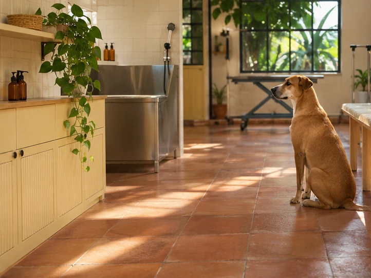

Um banho na sua semana.
Navegue por uma semana de exemplo e escolha um horário para simular o pedido.
Escolha um horário
Agenda de demonstração. Os horários são fictícios e a escolha gera um resumo na tela.
Para o dia do banho
Combine os detalhes da chegada e da retirada com a equipe.
- Use uma guia ou caixa de transporte na chegada.
- Conte se é a primeira visita do cão.
- Confirme o tempo previsto antes de sair para buscá-lo.